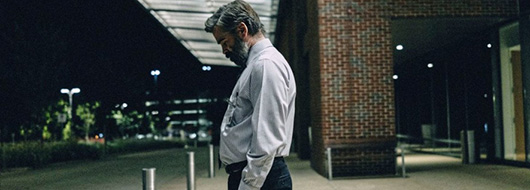

After the untimely death of 16-year-old Martin's father on the operating table, little by little, a deep and empathetic bond begins to form between him and the respected cardiothoracic surgeon, Dr Steven Murphy. At first, expensive gifts and then an invitation for dinner will soon earn the orphaned teenager the approval of Dr Steven's perfect family, even though right from the start, a vague, yet unnerving feeling overshadows Martin's honest intent. And then, unexpectedly, the idyllic family is smitten by a fierce and pitiless punishment, while at the same time, everything will start falling apart as the innocents have to suffer. In the end, as the sins of one burden the entire family, only an unimaginable and unendurable decision that demands a pure sacrifice can purge the soul. But to find catharsis, one must first admit the sin.
